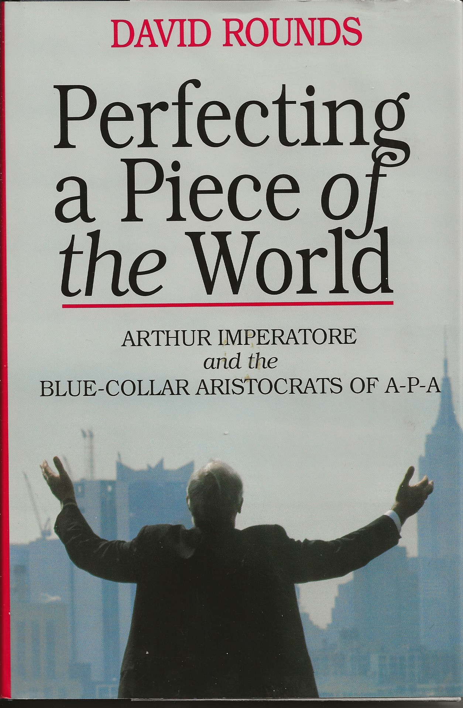

A-P-A Transport Corp
Lowell, AR
MC-135797 DoT 80806
On February 20, 2002, APA closed its doors for good…
Facebook - APA Transport Phila. Terminal Friends
Facebook - APA Workmates
Facebook - A-P-A Transport
Wikipedia - A-P-A Transport Corp.
Youtube - APA Transport Corp. And It's Founder, Arthur Imperatore Sr.
Youtube - A-P-A Transport - 40th Anniversary VHS
Route Map - 1961

Profiled in Mike Terebecki's The Trucking Pioneers Book (click image to see Book index)

Perfecting a Piece of the World

Acquisitions
Patches of it that are in my project - Facebook Trucking Industry Insignia Patches


Other known patches
If you want your own trucking company memoribilia:
Items available on eBay
Items available on eBay
Note that patches sold by "freedomfifty2k" and "bob82ndabn325inf"are likely promo/replica patches, not patches actually used by the company represented.